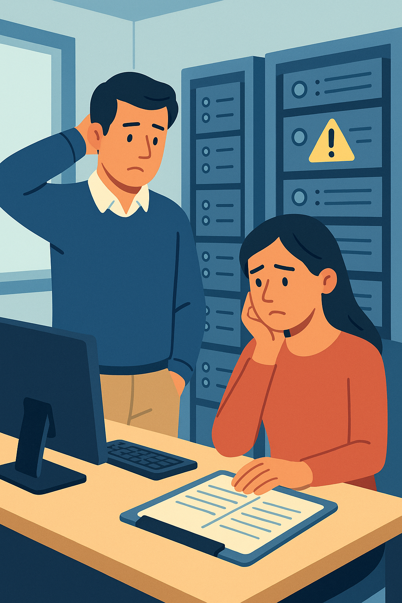

Grammar Focus – Third and Mixed Conditionals
💡 Why These Structures Matter
In the workplace, we often reflect on past mistakes to learn what could have been done differently or how they’re affecting us now. Third and mixed conditionals help you talk about these “what if” scenarios in a professional way, whether you’re reviewing a project, apologizing to a client, or discussing improvements with your team.
This session explains these grammar structures by focusing on their meaning in real work situations. You’ll see how they help you express ideas about the past and present clearly and professionally.
🎧 Complementary Audio – Guided Explanation
This audio supports you as you go through the lesson. Listen to it for a step-by-step explanation with spoken examples. It’s especially helpful if you prefer learning by listening or want to review while doing other tasks.
🧠 Third Conditional: Imagining a Different Past
The third conditional lets you talk about things that didn’t happen in the past and imagine what could have been different. It’s useful for reflecting on mistakes or missed opportunities at work.
Structure: If + had + past participle, would have + past participle
Example: If we had checked the order carefully, we wouldn’t have sent the wrong items.
(Reality: We didn’t check carefully, so we sent the wrong items.)
What This Means
When you use the third conditional, you’re imagining a different version of the past, like rewinding a movie and changing the ending. The “if” part describes what didn’t happen, and the “would have” part shows the result you’re imagining. This helps you explain what went wrong or take responsibility in a professional way.
💡 Tip: Use the third conditional in team meetings or reports to reflect on past actions, like explaining why a project failed.
🔁 Mixed Conditionals: Connecting Past and Present

Mixed conditionals show how something that happened (or didn’t happen) in the past affects things now. They’re great for explaining why you’re facing a problem today because of a past mistake.Structure: If + had + past participle, would + base verb
Example: If we had fixed the system last week, we wouldn’t be losing time now.
(Reality: We didn’t fix the system, so we’re losing time today.)
What This Means
Mixed conditionals link two different times in your mind: something that went wrong in the past and how it’s causing trouble now. The “if” part looks back at the past mistake, and the “would” part describes the current situation. This helps you explain to colleagues or clients why things are the way they are.
💡 Tip: Use mixed conditionals when apologizing to clients or discussing ongoing issues caused by past decisions.
🛠 Workplace Examples
Third and mixed conditionals are common when analyzing mistakes or explaining problems at work. Here’s how they’re used in real-life situations:
| Situation | Third Conditional | Mixed Conditional |
|---|---|---|
| A delivery was late | If we had sent the package on time, it would have arrived yesterday. | If we had sent the package earlier, the client wouldn’t be upset now. |
| An email was missed | If I had sent the email, the team would have been prepared. | If I had sent the email, we wouldn’t be confused today. |
| A deadline was missed | If we had started earlier, we would have finished the report. | If we had planned better, we wouldn’t be behind now. |
💡 Tip: Use these structures in emails or discussions to sound thoughtful and professional when talking about past mistakes.